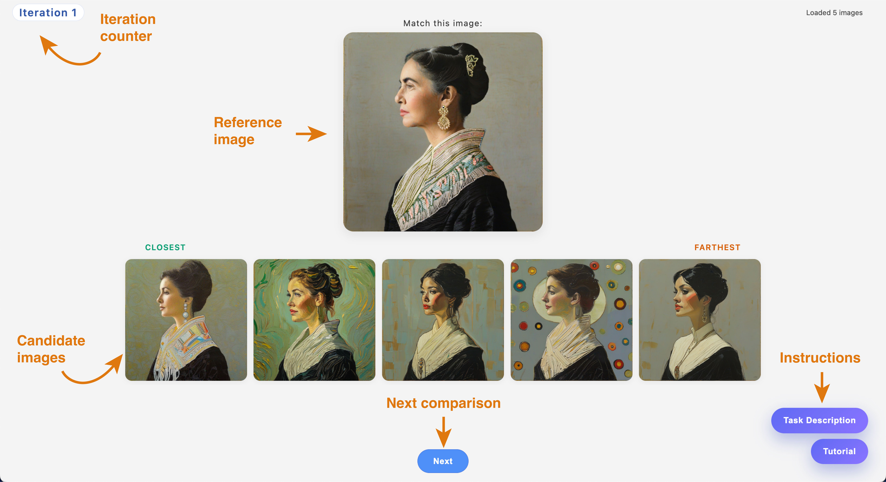
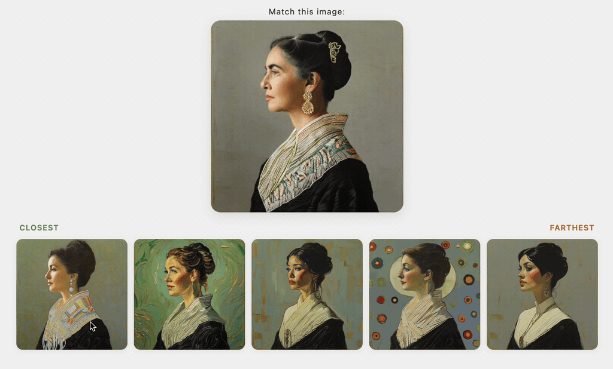
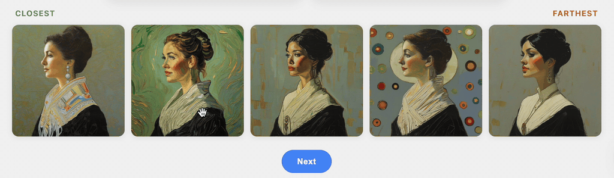

1. Interface Overview
This interface presents a reference image and a set of candidate images for comparison.

- The reference image appears at the top, labeled “Match this image”. This is the image you should compare against.
- Below the reference image, you will see a row of candidate images.
- The candidates are arranged from Closest (left) to Farthest (right) based on your judgment.
- An iteration counter at the top indicates your current progress.
- Use the Next button at the bottom to move on after completing each comparison.
- In the bottom-right corner, the task description and this interface tutorial are available at any time.
2. Image Zoom-In
To examine details more closely, you can zoom in on images.
- Click on any image to view it in a larger, side-by-side zoomed view.
- The zoomed view allows you to compare details of the reference image and the selected image more closely.

3. Ranking Images and Moving Forward
Your task is to judge how visually similar each candidate image is to the reference.
- Compare each candidate to the reference image based on overall visual appearance and style.
- Arrange the candidate images from most similar (Closest) to least similar (Farthest).
- If two candidates appear equally similar, place the one that feels slightly closer overall toward the left.
- Once you are satisfied with the ordering, click Next to proceed to the following iteration.

4. Instructions
The task description and this interface tutorial are available at any time.
To access them, click the buttons located in the bottom-right corner of the interface.